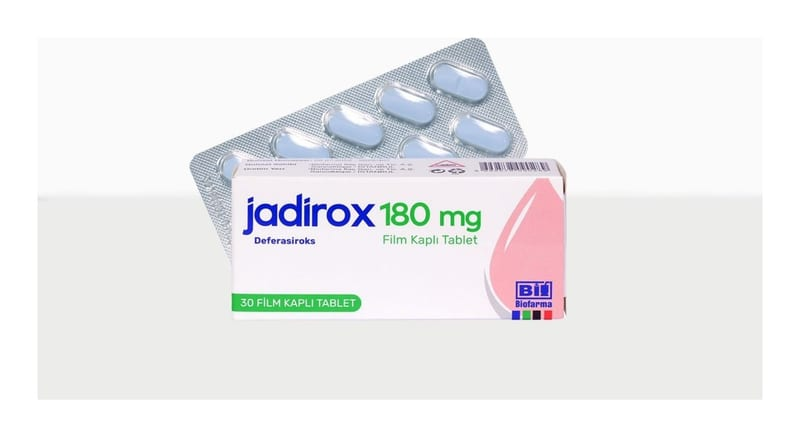

Jadirox 180 mg Film Kaplı Tablet , 30 Adet

Ne için kullanılır
KT · Bölüm 1JADİROX, mavi renkli, oblong, bikonveks, bir yüzü çentikli film kaplı tabletlerdir. Her bir tablet 180 mg deferasiroks içerir.
JADİROX tabletler 30 film kaplı tablet içeren ambalajlarda sunulmaktadır. Bu ilacı kullanmaya başlamadan önce bu KULLANMA TALİMATINI dikkatlice okuyunuz, çünkü sizin için önemli bilgiler içermektedir.
Bu kullanma talimatını saklayınız. Daha sonra tekrar okumaya ihtiyaç duyabilirsiniz. Eğer ilave sorularınız olursa, lütfen doktorunuza veya eczacınıza danışınız. Bu ilaç kişisel olarak sizin için reçete edilmiştir, başkalarına vermeyiniz. Bu ilacın kullanımı sırasında, doktora veya hastaneye gittiğinizde doktorunuza bu ilacı kullandığınızı söyleyiniz. Bu talimatta yazılanlara aynen uyunuz. İlaç hakkında size önerilen dozun dışında yüksek veya düşük doz kullanmayınız.
JADİROX, 6 yaş ve üzeri çocuklarda ve erişkinlerde, kan nakillerine bağlı kronik demir yüklenmesinin (transfüzyonel hemosideroz) tedavisinde kullanılır. Bu film kaplı tablet, 2-5 yaş grubunda ise; suda dağılabilen tablet ve parenteral demir şelatörlerinin kullanılabildiği hastalarda tercih edilmemelidir.
JADİROX ayrıca transfüzyona bağlı olmayan talasemi semptomları (alfa-talasemi intermedia, beta- talasemi intermedia, hafif orta klinik bulgu veren birlikte geçişli talasemiler) olan 10 yaş ve üzerindeki hastalarda kronik demir yüklenmesinin (karaciğer demir konsantrasyonun ≥5 mg/g kuru ağırlık (ka) veya serum ferritin düzeyinin >800 mcg/L olması) tedavisinde endikedir. Karaciğer demir konsantrasyonu <3 mg/g kuru ağırlık veya serum ferritin <300 mcg/L olduğunda tedavi sonlandırılır.
JADİROX, vücuttaki demir fazlasını (aşırı demir yükü diye de adlandırılır) gideren demir bağlayıcı bir ilaçtır (demir şelatörü). JADİROX demiri bağlar ve büyük oranda dışkı yoluyla vücuttan atılmasını sağlar.
Talasemi, orak hücre anemisi ve miyelodisplastik sendrom gibi bazı anemi (kansızlık) tipleri bulunan hastalarda tekrar tekrar kan nakli gerekebilir. Bununla birlikte, kan naklinin tekrarlanması aşırı demir birikimine sebep olabilmektedir. Bunun sebebi kanda demir bulunması ve vücudumuzun kan nakliyle alınan aşırı demiri vücuttan atmak için doğal bir yola sahip olmamasıdır.
Kan nakline bağlı olmayan talasemi sendromları (düzenli kan nakli almayan talasemi hastaları): JADİROX, talasemi sendromlarıyla ilişkili demir yüklenmesi olan ancak kan nakli almayan hastaların tedavisi için kullanılır. Bu durumdaki yetişkinlerde, adölesanlarda ve 10 yaş ve üzeri çocuklarda kullanılabilir. Kan nakline bağlı olmayan talasemi sendromları olan hastalarda başlıca, düşük kan hücresi sayısına yanıt olarak besinle alınan demirin emilimindeki artış nedeniyle zaman içinde aşırı demir yüklenmesi gelişebilir. Düzenli kan nakli almayan talasemik hastalarda yüksek demir düzeyleri genellikle yalnızca 10 yaş ve üzeri hastalarda gözlenmektedir.
Zaman içerisinde, demir fazlası karaciğer ve kalp gibi önemli organlara zarar verebilir.
Demir fazlasını atmak ve organların zarar görme riskini azaltmak için demir şelatörü olarak adlandırılan ilaçlar kullanılır.
JADİROX’un nasıl etki gösterdiği veya bu ilacın size neden reçete edildiği konusunda sorularınız varsa doktorunuza danışınız.